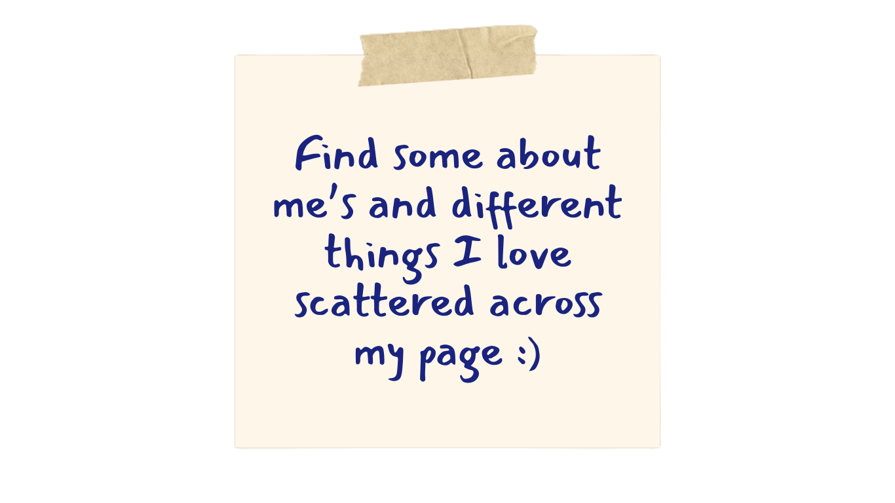
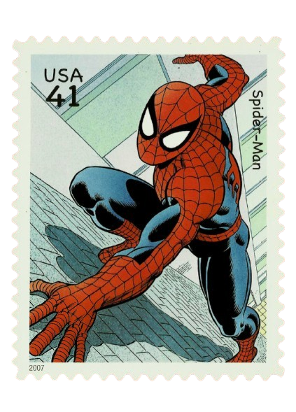
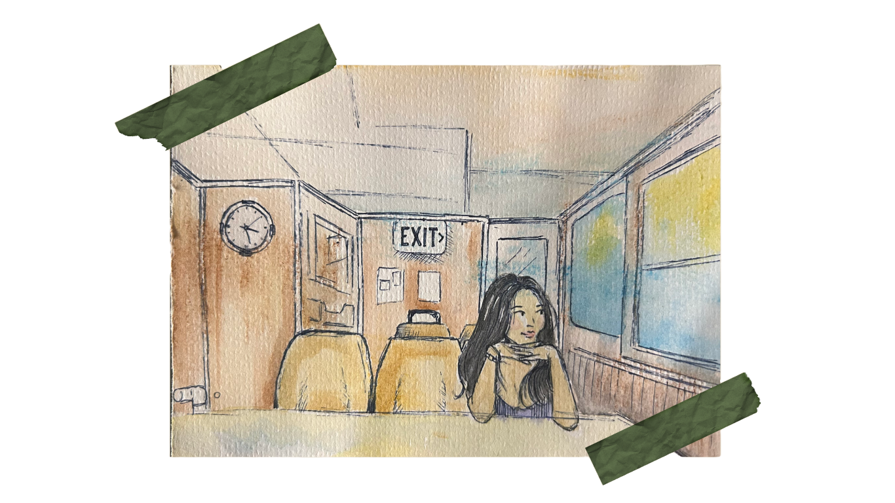

Charmaine Pasicolan
I care deeply about humans and being human. This philosophy drives my passion for CS for Social Good! As a Computer Science student with a Cybersecurity concentration, I’m committed to crafting digital experiences that prioritize both security and user empathy, focusing on technology that respects and understands the people who use it. My dedication to this approach has been shaped by my experience as Co-President of the CS+SG, where I lead initiatives that merge technology with social impact. I believe that the future of technology isn’t just about advancing systems but about enhancing the human experience ♡


